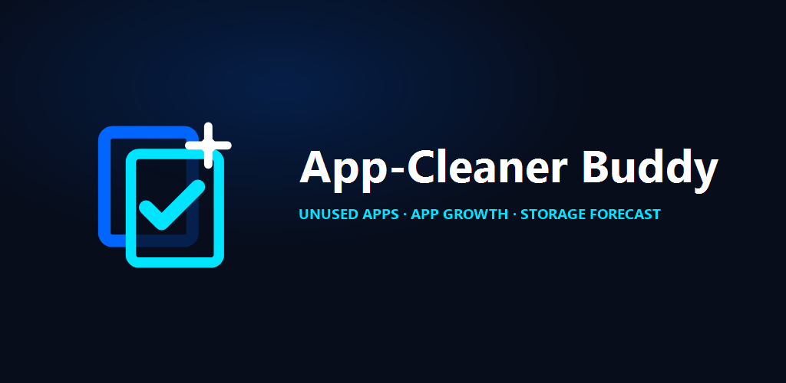
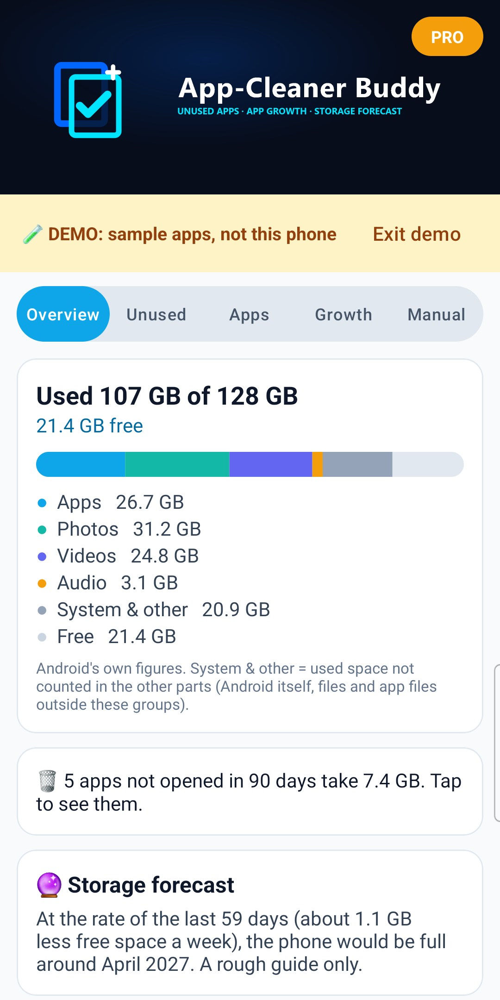
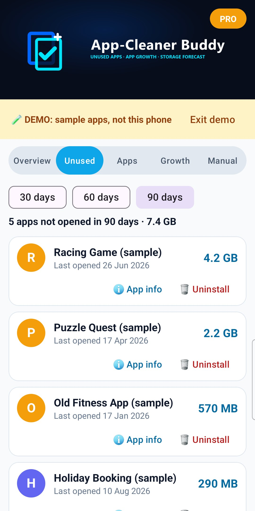
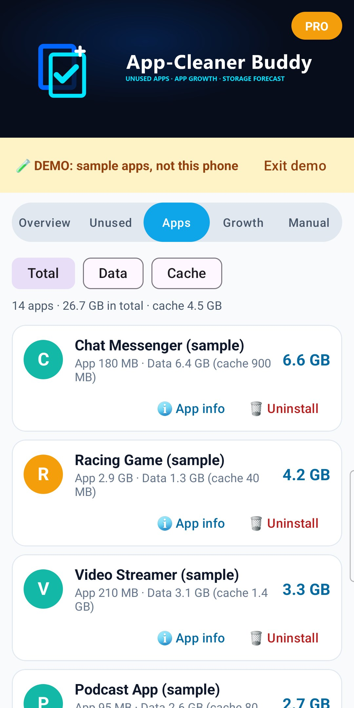
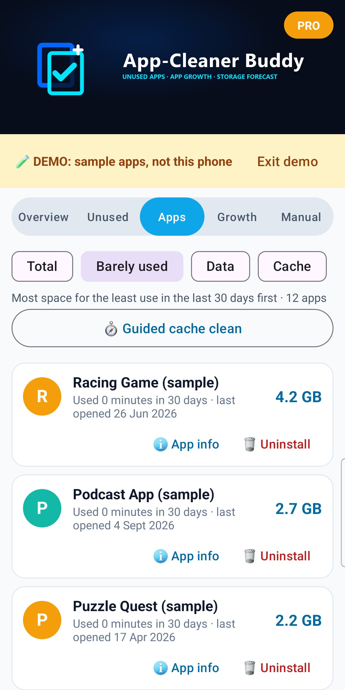
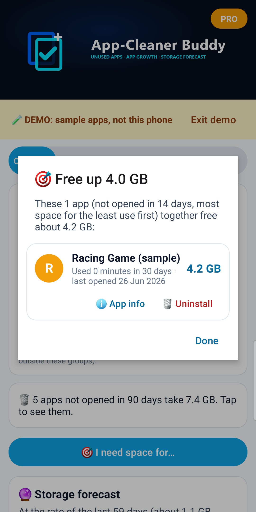
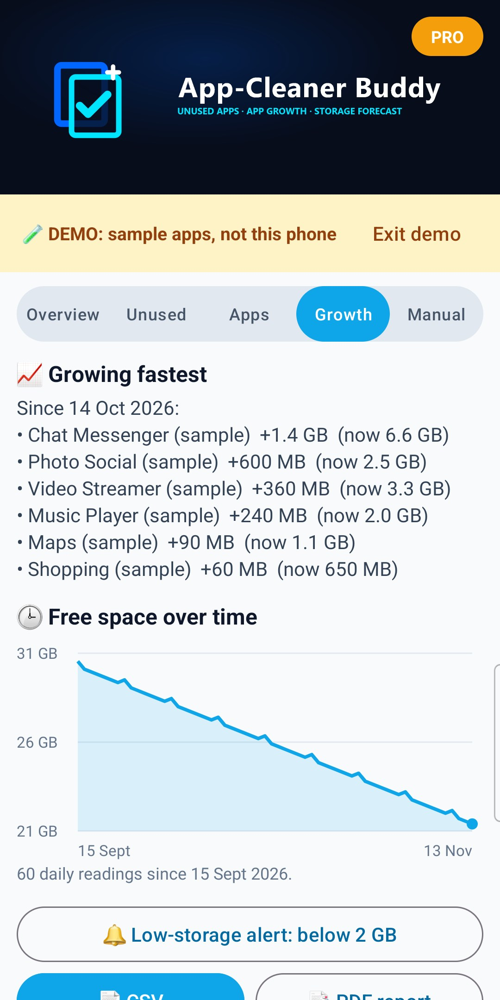

How App-Cleaner Buddy works, step by step
App-Cleaner Buddy shows where your phone's storage goes, using Android's own figures, and helps you find the apps worth removing: apps you haven't opened for months, apps that take a lot of space for the little you use them, and apps that keep getting bigger.
It never deletes anything itself. Uninstall, Archive and App info open Android's own screens, and you confirm there. It has no ads, no pop-up warnings and no "junk" or "boost" buttons: every number is a reading from Android.
Android only tells an app how big other apps are, when they were last used and for how long, if you switch on Usage access for it. Tap Turn on in the card at the top, find App-Cleaner Buddy in the list and switch it on.
Sizes use 1 GB = 1,000 MB. Some phones count 1 GB = 1,024 MB, so a 128 GB phone shows as 137 GB here; App-Cleaner Buddy says so under the free space when that's the case.
Apps you haven't opened in 30, 60 or 90 days (tap to choose), biggest first, with when Android last recorded you using each one, and how long you used it in the last 30 days.
Every app in your app drawer. Sort by Total, Barely used, Data or Cache.
Archive removes the app itself and its cache, but keeps its data and logins. Its icon stays on your home screen: tap it any time and Android gets the app back, as it was.
On the Unused or Apps tab, tick the apps you want to remove (on Unused, Select all ticks every app in the list), then tap 🧹 Remove. Android asks you about each app in turn: confirm to remove it, or tap Cancel to keep it.
After you uninstall, archive or clear an app's storage from App-Cleaner Buddy, it measures that app's size again when you come back and adds what was freed to a running total, shown on the Overview tab. Only space measured as freed is counted.
Tap 🎯 I need space for… on the Overview tab and choose how much space you need to free up (1, 2, 4, 8 or 16 GB), for example for an update or holiday videos. App-Cleaner Buddy lists the fewest apps you haven't opened in 14 days that together free it, taking the apps with the most space for the least use first. Archive or uninstall them straight from the list, or tap 🧹 Remove all to remove them in one go.
On the Apps tab, tap 🧭 Guided cache clean. App-Cleaner Buddy takes you through the apps with the most cache (over 20 MB), one at a time:
1. Tap Open App info, then Storage, then Clear cache.
2. Come back with the Back button. App-Cleaner Buddy measures the cache again and shows what was freed, then moves on.
Skip any app, or Stop at any time. Apps make new cache as you use them, so some of it comes back over time.
App-Cleaner Buddy saves one storage reading a day on this phone: free space and the size of each app. From these readings:
Android decides exactly when the daily reading runs, so some days may be missed.
From the daily readings of the last 60 days, App-Cleaner Buddy works out how fast free space is going down and when the phone would be full at that rate. It needs at least 4 readings over 7 days.
If free space isn't going down, it says so. The forecast is a rough guide: installing or deleting something big changes it.
On Android 13 and newer, allow notifications when asked.
Files are only shared when you choose an app on Android's share screen.
Tap 🧪 Try the demo (the card at the top, or the Manual tab) to see every screen with sample apps and 60 days of sample readings. A yellow strip says DEMO: sample apps, not this phone, and exports made in the demo say DEMO too. In the demo you can try Growth, the forecast, I need space for…, CSV and the PDF report for free. Tap Exit demo to go back to your phone.
Once you've bought Pro, the Manual tab no longer shows 🧪 Try the demo.
For photos and downloads, use your phone's Gallery or Files app.
Pro is one payment for life. No subscription.
Free always includes the storage breakdown, unused apps, barely used apps, 🧹 Remove several apps in one go, Archive and the freed total.
Tap GO PRO at the top. Already bought it, or on a new phone with the same Google account? Tap Restore purchase.
App-Cleaner Buddy v1.2 (Build 3)
Publisher: AppStack Studio
App-Cleaner Buddy shows where your storage goes using Android's own figures, and finds the apps worth removing: the ones you no longer open, and the ones that keep getting bigger. No ads, no pop-up warnings and no "junk" or "boost" buttons.
| Feature | Typical "cleaner" apps | App-Cleaner Buddy |
|---|---|---|
| Where the numbers come from | "Junk found" totals that come back the next day | Android's own readings: app, data and cache for each app |
| Apps you no longer use | Often not shown | Not opened in 30, 60 or 90 days, biggest first, with the last date Android recorded |
| Free space but keep the app's data | Uninstall only | 📦 Archive (Android 15+): the app is removed, its data and logins kept; one tap brings it back |
| Space for the use you get | Size only | Barely used: most space for the least use in the last 30 days first |
| "I need 4 GB for an update" | You work it out | ⭐ Pro: the fewest apps to remove to free that much |
| Apps that keep getting bigger | Not shown | ⭐ Pro: growth since about 30 days ago, from daily readings on your phone |
| When will my phone be full? | Not shown | ⭐ Pro: forecast from your own readings, plus a low-storage alert |
| Ads and scare pop-ups | Common | None |

1. Overview
Used and free space, where it goes, unused apps and the forecast.

2. Unused
Apps not opened in 30, 60 or 90 days, biggest first.

3. Apps
Every app's size, data and cache.

4. Barely used
Most space for the least use first, with minutes used in 30 days.

5. I need space for… (Pro)
The fewest apps to remove to free the space you need.

6. Growth (Pro)
Apps growing fastest, apps growing in the background, and free space over time.
Screenshots show the app's built-in demo (sample apps, not a real phone), with Pro switched on.